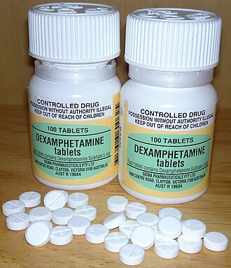

Синдром дефицита внимания и гиперактивности
Материал из Википедии — свободной энциклопедии
Синдром дефициита внимания и гиперактивности (СДВГ), расстройство внимания с гиперактивностью, или гиперактивное расстройство с дефицитом внимания (англ. attention deficit hyperactivity disorder, ADHD), — расстройство поведения и психического развития, начинающееся в детском возрасте. Проявляется такими симптомами, как трудности концентрации внимания, гиперактивность и плохо управляемая импульсивность.

В МКБ-10 СДВГ относился к гиперкинетическим расстройствам — группе эмоциональных расстройств и расстройств поведения, начинающихся обычно в детском возрасте, а в МКБ-11 относится к нейроонтогенетическим расстройствам. С неврологической точки зрения СДВГ рассматривается как стойкий и хронический синдром, для которого не найдено способа излечения. Считается, что некоторые дети, а именно 30 %, «перерастают» этот синдром либо приспосабливаются к нему во взрослой жизни.
Классификация
В DSM-5 выделяется 3 основных типа расстройства и 2 дополнительных («другое уточнённое» и «неуточнённое»):
- Расстройство дефицита внимания/гиперактивности: преобладание дефицита внимания — СДВГ-ПДВ или СДВГ-ДВ (англ. attention-deficit/hyperactivity disorder: predominantly inattentive presentation, код 314.00/F90.0)
- Расстройство дефицита внимания/гиперактивности: преобладание гиперактивности и импульсивности — СДВГ-ГИ или СДВГ-Г (англ. attention-deficit/hyperactivity disorder: predominantly hyperactive/impulsive presentation, код 314.01/F90.1)
- Расстройство дефицита внимания/гиперактивности: смешанный тип — СДВГ-С (англ. attention-deficit/hyperactivity disorder: combined presentation, код 314.01/F90.2).
- Другое уточнённое расстройство дефицита внимания/гиперактивности (англ. other specified attention-deficit/hyperactivity disorder, код 314.01/F90.8).
- Неуточнённое расстройство дефицита внимания/гиперактивности (англ. unspecified attention-deficit/hyperactivity disorder, код 314.01/F90.9).
В МКБ-11 (2018) гиперактивное расстройство с дефицитом внимания появилось как отдельный диагноз (код 6A05). Выделяются следующие подтипы расстройства:[6]
- 6A05.0: Представлена преимущественно невнимательность.
- 6A05.1: Представлена преимущественно гиперактивность-импульсивность.
- 6A05.2: Смешанный тип.
- 6A05.Y: Другой уточнённый тип.
- 6A05.Z: Неуточнённый тип.
Распространённость
По данным для населения Соединённых Штатов, это расстройство присутствует у 3—5 % людей, включая как детей, так и взрослых. СДВГ чаще диагностируется у мальчиков. Относительная распространённость среди мальчиков и девочек колеблется от 3:1 до 9:1, в зависимости от критериев диагноза, методов исследования и групп исследования (дети, которых направили к врачу; школьники; население в целом). От этих же факторов зависят и оценки распространённости СДВГ (от 1—2 % до 25—30 %).
Определение и диагностические критерии
В настоящее время основой для установления диагноза является феноменологическая психологическая характеристика. Многие признаки СДВГ проявляются лишь время от времени.
Согласно действующим (по состоянию на начало 2007 года) критериям диагностики, СДВГ можно диагностировать начиная с позднего дошкольного или школьного возраста, поскольку для выполнения требований постановки диагноза необходима оценка поведения ребёнка как минимум в двух условиях обстановки (например, дома и в школе). Наличие нарушений обучения и социальных функций выступает в качестве необходимого критерия для установления диагноза СДВГ.
Импульсивность
Одним из главных признаков СДВГ, наряду с нарушениями внимания, является импульсивность — недостаток контроля поведения в ответ на конкретные требования. Клинически эти дети зачастую слишком быстро реагируют на задания, не дожидаясь указаний и инструкций по их выполнению, а также неадекватно оценивают требования задания. В результате они очень небрежны, невнимательны, беспечны и легкомысленны. Такие дети зачастую не могут предсказать потенциально негативные, вредные или разрушительные (и даже опасные) последствия, которые могут быть связаны с определёнными ситуациями или их поступками. Часто они подвергают себя необоснованному, ненужному риску, чтобы показать свои смелость, капризы и причуды, особенно перед сверстниками. В результате нередки несчастные случаи с отравлениями и травмами. Дети с СДВГ легкомысленно и беспечно повреждают или уничтожают чужую собственность значительно чаще, чем дети без признаков СДВГ.
Одна из трудностей в диагностировании СДВГ — то, что он часто сопровождается другими проблемами. Небольшая группа людей с СДВГ страдает редким расстройством, называемым синдром Туретта (комбинированные голосовые и множественные двигательные тики).
Диагностические критерии
Диагностические критерии СДВГ по классификации DSM-5
Согласно DSM-5 (2013), диагноз синдром дефицита внимания/гиперактивности можно установить не раньше 12 лет (по изданию DSM-IV 1994 года с 6 лет). Симптомы должны наблюдаться в разных ситуациях и обстановке. Для постановки диагноза необходимо наличие 6 симптомов (из группы «невнимательности» и/или «гиперактивности и импульсивности»), а с 17 лет — 5 симптомов. Симптомы должны присутствовать не менее полугода, и пациенты не должны отставать от уровня развития большинства подростков своего возраста. Для постановки диагноза симптомы должны проявляться и до 12 лет, при этом их нельзя объяснить другими психическими расстройствами.
- Невнимательность
- Часто неспособен уделять тщательное внимание деталям или делает небрежные ошибки при выполнении школьных заданий, на работе, или в иных видах деятельности (например, игнорирует или упускает детали, работа неточная).
- Обычно с трудом сохраняет внимание при выполнении заданий или во время игр (например, с трудом остаётся сосредоточенным во время лекций, разговоров или длительного чтения).
- Часто производит впечатление неслышащего обращённой к нему речи (например, кажется витающим в облаках или отсутствующим без какого-либо очевидного отвлекающего фактора).
- Зачастую не до конца следует инструкциям и не завершает школьные задания, домашние дела, или обязанности на рабочем месте (например, начинает задания, но быстро теряет фокус и легко отвлекается).
- Часто испытывает сложности в организации заданий и иной деятельности (например, с трудом справляется с последовательными заданиями; затрудняется хранить материалы и личные вещи в порядке; работает беспорядочно, неорганизованно; плохо распоряжается временем; не укладывается в предельные сроки).
- Обычно стремится избегать заданий, требующих длительного умственного напряжения (например, школьной и домашней работы; для старших подростков и взрослых — подготовки отчётов, заполнения формуляров, реферирования длинных статей).
- Часто теряет вещи, необходимые в школе и дома (например, школьные материалы, карандаши, книги, инструменты, кошельки, ключи, документы, очки, мобильные телефоны, зонты, перчатки, кольца или браслеты, которые снял на время).
- Зачастую легко отвлекается посторонними раздражителями (у старших подростков и взрослых оными могут быть иррелевантные мысли).
- Часто проявляет забывчивость в повседневных ситуациях (например, при выполнении домашних обязанностей и поручений; старшие подростки и взрослые забывают перезвонить, оплатить счета, прийти на назначенную встречу).
- Гиперактивность и импульсивность
- Зачастую беспокойно двигает или отбивает ритм кистями или ступнями, или сидит извиваясь.
- Часто покидает своё место в ситуациях, когда это не приветствуется (в классе, в офисе или ином рабочем помещении, а также в иных ситуациях, требующих усидчивости).
- Часто носится вокруг или куда-то карабкается в ситуациях, когда это неприемлемо. (Примечание. У подростков или взрослых непоседство может внешне не проявляться.)
- Обычно не может тихо, спокойно играть или заниматься чем-либо на досуге.
- Часто суетится как заведённый (например, для него невозможно или дискомфортно в течение длительного времени спокойно сидеть в ресторанах, на совещаниях; может восприниматься другими как беспокойный, с кем трудно контактировать).
- Часто проявляет чрезмерную говорливость.
- Зачастую выпаливает ответ, не дослушав вопроса (например, завершает предложения людей, не может дождаться своей очереди говорить).
- Обычно с трудом дожидается своей очереди (например, в живой очереди).
- Часто перебивает или вторгается к другим (например, встревает в разговоры, игры или дела; может начать пользоваться вещами других людей, не спросив или не получив разрешения; подростки и взрослые могут вмешиваться в чужую работу или перехватывать её выполнение).
Диагностика СДВГ по классификации DSM-5
Одним из методов диагностики симптомов СДВГ по классификации DSM-5 является тест непрерывной производительности MOXO.
MOXO является компьютерным тестом для диагностики симптомов СДВГ у детей, подростков и взрослых. Тест существует в двух версиях, которые рассчитаны на детскую (6—12 лет) и взрослую аудиторию (13—70 лет).
Тест представляет собой программу, которая состоит из восьми уровней. В процессе прохождения теста, на экране появляются целевые и не целевые раздражители, на которые испытуемый соответственно должен реагировать нажатием пробела или наоборот — отсутствием каких-либо действий.
Особенность теста состоит в том, что в процессе его прохождения на экране с помощью визуальных анимаций и звуковых эффектов возникают раздражители, идентичные раздражителям реальной жизни. Использование таких раздражителей позволяет достигнуть высокой точности диагностики симптомов СДВГ (на 90 %).
Результатами теста выступают численные значения симптомов СДВГ, а также графики активности испытуемого на каждом из 8 этапов тестирования. Графики активности позволяют специалисту расшифровать влияние аудиальных, визуальных и комбинированных раздражителей на общий профиль внимания испытуемого и на каждый из четырёх критериев СДВГ по классификации DSM-5: внимательности, согласованности действий, импульсивности и гиперактивности.
Диагностические критерии СДВГ по классификации МКБ-10
В Международной классификации болезней 10-пересмотра (МКБ-10) синдром дефицита внимания и гиперактивности входит в диагностическую рубрику «нарушение активности и внимания» (F90.0).
Для постановки диагноза синдрма дефицита внимания и гиперактивности должны выявляться общие критерии гиперкинетического расстройства (F90), но не критерии расстройства поведения (F91).
Обобщая, должны выявляться некоторые из симптомов следующих групп (общие критерии для «гиперкинетические расстройств» — F90): невнимательность (неспособность внимательно следить за деталями, поддерживать внимание на заданиях или в играх, неспособность следовать инструкциям или завершать школьные задания, частые отвлечения на внешние стимулы и др.), гиперактивность (беспокойные движения частями тела, ёрзание на месте, невозможность усидеть на месте, бег или карабканье куда-либо в неуместных ситуациях, неадекватная шумность в играх и др.) и импульсивность (ответы до того, как завершены вопросы, неспособность ждать в очередях, болтливость без адекватной реакции на социальные ограничения, частое прерывание других и встревание в разговоры или игры).
Начало расстройства должно быть до 7 лет, продолжительность его не менее 6 месяцев, а коэффициент интеллекта (IQ) пациента выше 50.
СДВГ у взрослых
Многие взрослые, у которых СДВГ не был выявлен в детстве, не осознают, что именно это и есть причина их неспособности сохранять внимание, трудностей в изучении нового материала, в организации пространства вокруг себя и в межличностных отношениях.
Американское исследование 2006 года (так называемое Гарвардское исследование), включившее немногим более трех тысяч человек, позволило его авторам рассчитать ожидаемую распространённость СДВГ в 4,4 % во взрослой популяции (диагноз по критериям DSM-IV). Более высокая распространённость СДВГ выявлялась, если обследуемый являлся мужчиной, этническим европейцем, безработным и женатым в прошлом. В несколько более раннем исследовании (тоже в США, 966 взрослых обследованных) распространённость СДВГ среди взрослых была установлена в 2,9 % для СДВГ в узком понимании (Narrow ADHD, установлен по критериям DSM-IV) и 16,4 % для СДВГ в расширенном толковании (диагноз ставился с учётом ряда дополнительных, подпороговых критериев)[18]. С возрастом распространённость СДВГ у взрослых снижается.
Распространённость СДВГ у взрослых существенно зависит от наличия сопутствующих психологических проблем и заболеваний: по данным мексиканского исследования 2007 года наличие СДВГ было установлено у 5,37 % обследуемых из общей популяции (обследовано 149 человек) и у 16,8 % амбулаторных пациентов психиатров с не психотическими психиатрическими заболеваниями (обследован 161 человек). Среди психиатрических пациентов половые различия в распространённости СДВГ оказались «перевёрнутыми» по отношению к СДВГ в общей популяции и среди детей: СДВГ был установлен у 21,6 % пациенток-женщин и только у 8,5 % пациентов-мужчин.
Американский психиатр Аллен Фрэнсис, руководивший созданием классификатора психических расстройств DSM-IV, высказался крайне негативно по отношению к диагнозу СДВГ у взрослых. По его мнению, границы диагноза настолько размыты, что он может быть неоправданно поставлен множеству обычных людей, недовольных своими способностями к концентрации внимания на скучной и неинтересной работе. Положение ухудшает то, что в основе диагностики лежит субъективное мнение человека о своих способностях к концентрации и выполнению задач. Кроме того, Аллен Фрэнсис высказал опасения, что иногда у людей, которые жалуются на симптомы СДВГ, может быть биполярное аффективное расстройство или депрессия. В таком случае назначение обычных при терапии СДВГ психостимуляторов может только ухудшить состояние.
Английский психиатр Джоанна Монкрифф утверждает, что обычные критерии болезни и расстройства не подходят для определения СДВГ у взрослых, поскольку само состояние неотличимо от психической нормы. Монкрифф считает, что за ростом диагностики СДВГ у взрослых стоят финансовые интересы фармацевтических компаний, продвигающих свои препараты. Действие психостимуляторов обычно ощущается людьми как приятное, и потому некоторые склонны утверждать, что у них СДВГ, для того чтобы получить доступ к этим препаратам.
Методы лечения СДВГ
В разных странах подходы к лечению и коррекции СДВГ и доступные методы могут отличаться. Во многих странах первой линией лечения является обучение родителей правильным воспитательным техникам. Используются методы модификации поведения, психотерапии, педагогической и нейропсихологической коррекции. Медикаментозная терапия назначается по индивидуальным показаниям в случаях, когда нарушения поведения и когнитивных функций не могут быть преодолены педагогическими методами.
В США для лечения детей используется протокол WWK3, а для лечения взрослых протокол WWK10. В том числе для лечения детей разрешено применение риталина (метилфенидата), спорного препарата, имеющего высокий аддиктивный (наркогенный) потенциал.
Фармакокоррекция
При коррекции СДВГ в качестве вспомогательного метода прежде всего в США и Западной Европе применяются психостимуляторы, такие как метилфенидат, амфетамин, дексамфетамин.
Механизм действия психостимуляторов хорошо изучен. Он временно подавляет нормальные спонтанные поведенческие реакции как у экспериментальных животных, так и у детей. В частности, метилфенидат тормозит общение ребёнка со сверстниками, самостоятельность и игровые навыки, что позволяет контролировать поведение детей в школе и дома. Подобный контроль поведения при помощи метилфенидата ограничивает развитие самодисциплины.
Один из недостатков этих стимуляторов — необходимость принимать их несколько раз в день (время действия около 4 часов). Сейчас появились метилфенидат и дексамфетамин продолжительного действия (до 12 часов). При лечении СДВГ широко применяется длительно действующая форма метилфенидата (торговое наименование — «концерта»). Эффективность дексамфетамина, метамфетамина и метилфенидата с постепенным высвобождением для лечения СДВГ не вполне доказана. Ранее использовался психостимулятор пемолин, но из-за гепатотоксичности его применение стало ограниченным. Также используют препараты других групп, например атомоксетин (ингибитор обратного захвата норадреналина, группа адрено- и симпатомиметиков). Также эффективны антидепрессанты: дезипрамин в низких дозах, бупропион. С психостимуляторами может сочетаться клонидин, который смягчает побочные эффекты (устраняет бессонницу и импульсивность) и повышает влияние на гиперкинезы и гиперактивность.
Управление по санитарному надзору за качеством пищевых продуктов и медикаментов США (Food and Drug Administration, FDA) на апрель 2015 года одобрило следующие психостимуляторы для лечения СДВГ: амфетамин (левамфетамин и дексамфетамин), метилфенидат, дексметилфенидат, метамфетамин, лиздексамфетамин и атомоксетин (не относящийся к психостимуляторам).
Двойные слепые рандомизированные контролируемые исследования продемонстрировали эффективность модафинила при СДВГ, однако этот препарат не одобрен FDA и не используется в американской медицинской практике для лечения СДВГ из-за дерматологической токсичности (в клинических испытаниях у пациентов возникал синдром Стивенса — Джонсона). Европейское агентство лекарственных средств также рекомендовало назначать это лекарство исключительно при нарколепсии для лечения сонливости.
Особая осторожность необходима при назначении психостимуляторов детям, поскольку ряд исследований показал, что их высокие дозы (например, метилфенидат более 60 мг/день) или неправильное применение вызывает привыкание и может побудить подростков использовать более высокие дозы для достижения наркотического эффекта. Согласно проведённому в США исследованию среди кокаиновых наркоманов, у лиц с СДВГ, употреблявших стимуляторы в подростковом возрасте, вероятность пристрастия к кокаину в два раза выше, чем у тех, кому тоже был выставлен диагноз СДВГ, но кто не употреблял стимуляторов.
В исследовании, опубликованном в 2003 году, отмечалось, что объём мозга у детей с диагнозом СДВГ меньше, чем у детей, которым не был выставлен этот диагноз. Неясно, вызвано ли снижение объёма мозга самим заболеванием или препаратами, используемыми для лечения СДВГ.
Польза психостимуляторов при СДВГ была подтверждена в более 170 рандомизированных контролируемых исследованиях, в которых участвовали около 5000 детей. Однако это касается только краткосрочных эффектов от лечения, на время действия вещества. В 2010 году в Австралии было опубликовано исследование об отсутствии долговременного благоприятного воздействия при терапии СДВГ психостимуляторами. Исследование охватывало 2868 семей, за которыми наблюдали на протяжении 20 лет.
Обычно у детей при приёме психостимуляторов состояние значительно улучшается (больше в поведении, улучшения успеваемости в учёбе в долгосрочном плане нет), и лишь у немногих не наступает улучшения состояния. Плохая успеваемость, отвлекаемость и проявления агрессии частично исчезают при приёме психостимуляторов, и появляются вновь при отмене лекарства или замене его на плацебо.
Есть данные, что краткосрочное улучшение при приёме препаратов для лечения СДВГ сменяется при долгосрочном лечении, по-видимому, длительным вредом, а исследования на животных показывают, что эти препараты могут вызывать повреждение головного мозга.
Количество детей в США, которым назначают психостимуляторы, с 1990-х годов значительно возросло. Только с 1990 по 1993 год количество амбулаторных посещений психиатров по поводу СДВГ возросло с 1,6 до 4,2 миллионов в год, при этом на определённом этапе лечения 90 % детей получали психостимуляторы, в 71 % случаев — метилфенидат. На 1996 год врачами-психиатрами в США было выписано более 10 миллионов рецептов на метилфенидат. Остаётся неясным, чем вызвано повышение количества назначений психостимуляторов: избыточными назначениями или лучшей диагностикой СДВГ. По всей видимости имеют место оба фактора.
Комитет по правам ребёнка[en] Организации Объединённых Наций издал рекомендации, в которых говорится следующее:
«Комитет выражает озабоченность сведениями о том, что синдром дефицита внимания с гиперактивностью (СДВГ) и синдром дефицита внимания (СДВ) диагностируется ошибочно и что в результате чрезмерно прописываются психостимуляторы, несмотря на увеличивающееся количество свидетельств о вредном воздействии этих препаратов.
Комитет рекомендует провести дальнейшие исследования в отношении диагностики и лечения СДВГ и СДВ, включая возможные отрицательные эффекты психостимуляторов на физическое и психологическое благополучие детей, а также в максимальной степени использовать иные формы улаживания и лечения при обращении к поведенческим расстройствам».
Подход, распространённый в СНГ, — это ноотропные препараты, вещества, по мнению некоторых специалистов, улучшающие работу мозга, обмен, энергетику, увеличивающие тонус коры. Также назначаются препараты, состоящие из аминокислот, которые, по утверждениям производителей, улучшают обмен веществ мозга, однако доказательств эффективности такого лечения нет. Согласно одному российскому исследованию, результаты в котором оценивались по анкетированию родителей с помощью структурированного опросника Коннерса, общее улучшение поведения детей с СДВГ было достигнуто при лечении следующими ноотропными средствами: церебролизин (60 % детей), пирацетам (48 %), фенибут (50 %), инстенон (59 %)[23]. На фоне терапии антипсихотиком тиоридазином (сонапаксом) в дозировке 1 мг/кг (20—30 мг) положительная динамика отмечалась у 22 % детей, а в контрольной группе с поливитаминными препаратами — лишь у 10 % детей.
Используемые для лечения препараты:
- Психостимуляторы
- Амфетамин (аддералл)
- Дексамфетамин (декседрин и декседрин спансулы)
- Лиздексамфетамин (вивансе, венвансе, элвансе, тивенсе)
- Метамфетамин (дезоксин)
- Метилфенидат (риталин, метилин, метадат, концерта, дейтрана)
- Пемолин (бетанамин, цилерт, церактив)
- Амфетамин (аддералл)
- Центральные симпатомиметики
- Атомоксетин
- Центральные симпатолитики (α2-агонисты)
- Клонидин
- Гуанфацин
- Антидепрессанты
- Бупропион
- Имипрамин
- Дезипрамин
- Нортриптилин
- ГАМК
Нефармакологические подходы
В настоящий момент существует несколько нефармакологических подходов к методам лечения СДВГ, которые могут сочетаться с фармакокоррекцией либо использоваться независимо от неё:
- Нейропсихологический (при помощи различных упражнений).
- Синдромальный. Коррекция последствий родовых повреждений шейного отдела позвоночника и восстановление кровообращения головного мозга.
- Поведенческий, акцентирует на тех или иных поведенческих шаблонах, усиливая или ослабляя, их с помощью наград, наказаний, принуждения и активации.
Для поддержки детей в системе образования используются прикладные разработки на основе поведенческих методов, такие как система вмешательств и поддержания желаемого поведения, задающие рабочие рамки для функциональной оценки трудного поведения учащихся и переустройства условий обучения для решения этих проблем.
- Работа над личностью. Семейная психотерапия, которая формирует личность и которая определяет, куда направить эти качества (расторможенность, агрессивность, повышенную активность).
- Диетотерапия. Восполнение дефицита определённых микронутриентов, которые участвуют в синтезе и секреции серотонина и катехоламиновых нейротрансмиттеров. Известно, что СДВГ характеризуется нарушениями уровней этих нейротрансмиттеров.
- БОС-терапия (при помощи биологической обратной связи), в частности с применением электроэнцефалографической обратной связи ЭЭГ-БОС, называемой также нейрообратной связью (НейроБОС). По мнению Т. Росситера, нейрообратная связь (НейроБОС) может служить хорошей альтернативой медикаментозным методам коррекции расстройств внимания у детей. В ряде случаев, когда от медикаментозной терапии сложно отказаться в связи с тяжестью нарушений, метод НейроБОС может выступать в качестве мощного дополнения к терапии и способствовать длительному закреплению положительной динамики. Авторы отмечали, что после отмены препарата устойчивые улучшения были отмечены только в группе пациентов, которые вместе с приёмом препарата проходили сеансы. В некоторых исследованиях было показано, что после прохождения процедур по методу НейроБОС у детей с СДВГ обнаруживались улучшения в результатах общего теста IQ в среднем на 12 баллов. В этих же исследованиях авторы указывали на то, что биологическая обратная связь с использованием ЭЭГ-интерфейсов является хорошо себя зарекомендовавшим нелекарственным методом лечения СДВГ с доказанной эффективностью и минимальными побочными эффектами.
Вышеперечисленный комплекс методов психокоррекции и медикаментозного лечения при своевременной диагностике способен снизить у детей выраженность симптомов СДВГ, а также скомпенсировать уже возникшие нарушения и помочь в дальнейшем полноценно реализовать себя в жизни.
Причины СДВГ
- Точная причина возникновения СДВГ неизвестна, но существует несколько теорий. Причинами возникновения органических нарушений могут быть:
- Проблемы в социальном, финансовом, эмоциональном положении семьи. Матери-одиночки, родители с зависимостями, низкий социальный статус, ошибки в воспитании.
- Общее ухудшение экологической ситуации.
- Инфекции матери во время беременности и действие лекарств, алкоголя, наркотиков, курения в этот период.
- Иммунологическая несовместимость (по резус-фактору).
- Угрозы выкидыша.
- Хронические заболевания матери.
- Преждевременные, скоротечные или затяжные роды, стимуляция родовой деятельности, отравление наркозом, кесарево сечение.
- Родовые осложнения (неправильное предлежание плода, обвитие его пуповиной) ведут к травмам позвоночника плода, асфиксиям, внутренним мозговым кровоизлияниям.
- Любые заболевания младенцев с высокой температурой и приёмом сильнодействующих лекарств.
- Астма, пневмонии, сердечная недостаточность, диабет, заболевания почек могут выступать как факторы, нарушающие нормальную работу мозга;
- Неправильное питание, в том числе изучаются некоторые пищевые добавки как фактор, влияющий на гиперактивность.
Специалистами Медико-генетического научного центра РАМН и факультета психологии МГУ установлено, что «большинство исследователей сходится во мнении, что единую причину возникновения заболевания выявить не удается и, похоже, не удастся никогда». Учёные США, Голландии, Колумбии и Германии выдвинули предположение, что на 80 % возникновение СДВГ зависит от генетических факторов. Из более чем тридцати генов-кандидатов выбрали три — ген переносчика дофамина, а также два гена дофаминовых рецепторов. Однако генетические предпосылки к развитию СДВГ проявляются во взаимодействии со средой, которая может эти предпосылки усилить или ослабить.
Критика
СДВГ является одним из самых сомнительных и спорных душевных расстройств. СДВГ и его лечение ставятся под сомнение по меньшей мере с 1970-х годов. В существовании данного синдрома сомневаются многие врачи, учителя, высокопоставленные политики, родители и средства массовой информации. Спектр мнений о СДВГ довольно широк — от тех, кто не верит, что данное расстройство существует, до тех, кто верит, что существуют генетические или физиологические предпосылки этого состояния. Некоторые исследователи настаивают даже на влиянии климатических факторов в развитии СДВГ у детей
Исследователи из канадского Университета Макмастера определили пять основных пунктов, относительно которых развиваются дискуссии:
- Клиническое диагностирование, для которого не существует лабораторных или радиологических подтверждающих заболевание тестов и характерных физиологических особенностей организма.
- Частое изменение критериев диагностики.
- Не существует эффективного способа лечения. Существующие способы лечения очень длительны.
- При лечении используются препараты, часть которых содержит психотропные вещества (метилфенидат, декстроамфетамин).
- Частота выставления диагноза СДВГ различается значительно в разных странах.
Недостаточная ясность по поводу того, что можно отнести к СДВГ, и изменения в критериях постановки диагноза приводили к замешательству. Этические и юридические проблемы лечения выступали в качестве главных областей разногласия — особенно использование психостимуляторов при терапии, а также рекламирование стимуляторов СДВГ группами и индивидуумами, которые получают деньги от фармацевтических компаний.
Профессиональные медики и агентства новостей утверждали, что диагноз и лечение данного расстройства заслуживают более тщательного расследования.
Британский детский психиатр, один из лидеров сообщества «Критическая психиатрия» профессор Сэми Тимими считает СДВГ социальной конструкцией, пытающейся объяснить нормальное поведение ребёнка наличием якобы генетически обусловленного психического заболевания.
Для объяснения симптомов СДВГ были предложены альтернативные теории, к которым относятся теория охотника и фермера, нейроразнообразие и теория социального конструкта СДВГ.
Некоторые личности и группы полностью отрицают существование СДВГ. К ним можно отнести Томаса Саса, Мишеля Фуко и такие группы, как Гражданская комиссия по правам человека. Однако большинство[источник не указан 2797 дней] медицинских структур и суды США считают диагнозы СДВГ легитимными (см. Ritalin class action lawsuits).
Литература
На русском языке
- Альтхерр П., Берг Л., Вельфль А., Пассольт М. Гиперактивные дети. Коррекция психомоторного развития. — М.: Издательский центр «Академия», 2004.
- Брязгунов И. П., Касатикова Е. В. Непоседливый ребёнок или все о гиперактивных детях. — М.: Издательство института Психотерапии, 2002.
- Брязгунов И. П., Касатикова Е. В. Дефицит внимания с гиперактивностью у детей. — М.: Медпрактика-М, 2002.
- Заваденко Н. Н. Гиперактивность и дефицит внимания в детском возрасте. — М.: Издательский центр «Академия», 2005.
- Заваденко Н. Н. Как понять ребёнка: дети с гиперактивностью и дефицитом внимания. — М.: Школа-Пресс, 2001.
- Заваденко Н. Н., Суворинова Н. Ю., Румянцева М. В. Гиперактивность с дефицитом внимания: факторы риска, возрастная динамика, особенности диагностики // Дефектология. — 2003. — № 6.
- Монина Г. Б., Лютова-Робертс Е. К., Чутко Л. С. Гиперактивные дети. Психолого-педагогическая коррекция. — СПб.: Речь, 2007.
- Баркли Рассел А., Бентон Кристина М. Ваш непослушный ребёнок. — СПб.: Питер, 2004.
- Ратнер А. Ю. Неврология новорождённых: острый период и поздние осложнения. 4-е изд. — М.: БИНОМ; Лаборатория знаний, 2008. — 368 с. — ISBN 978-5-94774-897-0.
- Чутко Л. С., Пальчик А. Б., Кропотов Ю. Д. Синдром нарушения внимания с гиперактивностью у детей и подростков. — СПб.: Издательский дом СПбМАПО, 2004.
- Чутко Л. С. Синдром дефицита внимания с гиперактивностью и сопутствующие расстройства. — СПб.: Хока, 2007.
На других языках
- Hartmann,Thom «Attention Deficit Disorder, A Different Perception» subtitled «A Hunter in a Farmers World».
- Barkley, Russell A. Take Charge of ADHD: The Complete Authoritative Guide for Parents (2005) New York: Guilford Publications.
- Bellak L, Kay SR, Opler LA. (1987) «Attention deficit disorder psychosis as a diagnostic category». Psychiatric Developments, 5 (3), 239-63. PMID 3454965
- Conrad, Peter Identifying Hyperactive Children (Ashgate, 2006).
- Crawford, Teresa I’m Not Stupid! I’m ADHD!
- Green, Christopher, Kit Chee, Understanding ADD; Doubleday 1994; ISBN 0-86824-587-9
- Hanna, Mohab. (2006) Making the Connection: A Parent’s Guide to Medication in AD/HD, Washington D.C.: Ladner-Drysdale.
- Joseph, J. (2000). «Not in Their Genes: A Critical View of the Genetics of Attention-Deficit Hyperactivity Disorder», Developmental Review 20, 539—567.
- Kelly, Kate, Peggy Ramundo. (1993) You Mean I’m Not Lazy, Stupid or Crazy?! Af Self-Help Book for Adults with Attention deficit Disorder. ISBN 0-684-81531-1
- Matlen, Terry. (2005) «Survival Tips for Women with AD/HD». ISBN 1-886941-59-9
- Ninivaggi, F.J. «Attention-Deficit/Hyperactivity Disorder in Children and Adolescents: Rethinking Diagnosis and Treatment Implications for Complicated Cases», Connecticut Medicine. September 1999; Vol. 63, No. 9, 515—521. PMID 10531701